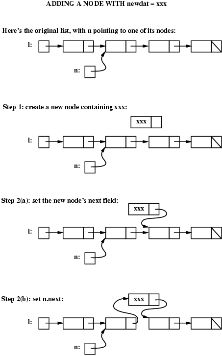
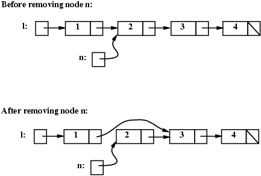
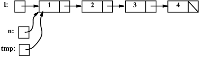
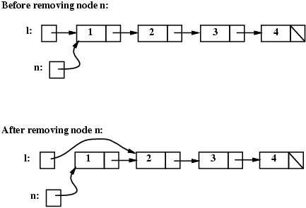

Here's a conceptual picture of a linked list containing N items, pointed to by a variable named head:
+--+ +-----+--+ +-----+--+ +-----+--+ +-----+-+
head: | -|---> |item1| -|---> |item2| -|---> |item3| -|---> ... ---> |itemN|\|
+--+ +-----+--+ +-----+--+ +-----+--+ +-----+-+
Note that a linked list consists of one or more nodes. Each node contains some data (in this example, item 1, item 2, etc.) and a pointer (note: usually the data is technically a pointer as well). For each node other than the last one, the pointer points to the next node in the list. For the last node, the pointer is null (indicated in the example using a diagonal line). To implement linked lists in C++, we will define a ListNode struct, to be used to represent the individual nodes of the list.
struct ListNode {
void *data;
Listnode *next;
};
Note that the void * type for the data field allows data to point to any type (for this reason the void pointer is also known as a generic pointer). In order to dereference data, a cast must be done to the actual type of the object data is pointing at, e.g., int *dataPtr = static_cast<int*>(node.data); casts the void pointer to an int pointer which can then be dereferenced as usual using * Note also that the next field of a ListNode is itself of type ListNode.
To understand this better, consider writing code to create a linked list of strings with two nodes, containing "ant" and "bat", respectively, pointed to by a variable named head (the pointer to the first node in a linked list is often called a head pointer). First we need to declare variable head and make head point to the first node of the list. We'll use new to allocate space for that node. We want its data field to contain "ant" and we'll set the next field to NULL):
Here's the code together with a picture showing what we have so far:
ListNode *head = new ListNode;
head->data = "ant";
head->next = NULL;
+--+ +-----+-+
head: | -|---> |"ant"|\|
+--+ +-----+-+
To add the second node to the end of the list we need to create the new node (with "bat" in its data field and null in its next field) and we need to set the next field of the first node to point to the new one:
ListNode *tmp = new ListNode;
tmp->data = "bat";
tmp->next = NULL;
head->next = tmp;
+--+ +-----+--+ +-----+-+
head: | -|---> |"ant"| -|---> |"bat"|\|
+--+ +-----+--+ +-----+-+
Let's consider some basic operations on linked lists:
When we add a node to the list, how we do it may depend on where the node is being added. We will consider adding a node:
Assume that head is a pointer to the first node in the list and that newdat is This means that the new node will become the new first node in the list and that what had been the first node will now need to be pointer to by the new node's next field. Here's the code:
ListNode *tmp = new ListNode; tmp->data = newdat; tmp->next = head; // tmp's next will point to what had been the first node head = tmp; // update head pointer
Note that this works even if the list is initially empty: if the list is empty, thenhead is null, so the next field of the new node will be set to null.
Assume that we are given:
and that the goal is to add a new node containing newdat immediately after n. To do this we must perform the following steps:
Here's the conceptual picture (note: in the images below, we really should use head instead of l):

(note: n.next in step 2(b) should be n->next)
ListNode *tmp = new Listnode; tmp->data = newdat; // Step 1 tmp->next = n->next; // Step 2(a) n->next = tmp; // Step 2(b)
Note that it is vital to first copy the value of n's next field into tmp's next field (step 2(a)) before setting n's next field to point to the new node (step 2(b)). If we set n's next field first, we would lose our only pointer to the rest of the list after node n!
Also note that, in order to follow the steps shown in the picture above, we needed to use variable tmp to create the new node (in the picture, step 1 shows the new node just "floating" there, but that isn't possible -- we need to have some variable point to it so that we can set its next field and so that we can set n's next field to point to it).
To remove a given node n from a linked list, we need to change the next field of the node that comes immediately before n in the list to point to whatever n's next field was pointing to. Here's the conceptual picture (note: as before, in the images below, we really should use head instead of l):

Note that we will also need to delete the node n is pointing to (to avoid a memory leak). It should be clear that in order to implement the remove operation, we first need to have a pointer to the node before node n (because that node's next field has to be changed). The only way to get to that node is to start at the beginning of the list. We want to keep moving along the list as long as the current node's next field is not pointing to node n. Here's the appropriate code:
ListNode *tmp = head;
while (tmp->next != n) { // find the node before n
tmp = tmp->next;
}Note that this kind of code (moving along a list until some condition holds) is very common. For example, similar code would be used to implement a lookup operation on a linked list (an operation that determines whether there is a node in the list that contains a given piece of data).
Note also that there is one case when the code given above will not work. When n is the very first node in the list, the picture is like this:

In this case, the test (tmp->next != n) will always be false and eventually we will "fall off the end" of the list (i.e., tmp will become null and we will get a runtime error when we try to dereference a null pointer). We will take care of that case in a minute; first, assuming that n is not the first node in the list, here's the code that removes n from the list:
ListNode *tmp = head;
while (tmp->next != n) { // find the node before n
tmp = tmp->next;
}
tmp->next = n->next; // remove n from the linked list
delete n; // free the memory pointed to by n
How can we test whether n is the first node in the list and what should we do in that case? If n is the first node, then head will be pointing to it, so we can test whether head == n. The following before and after pictures illustrate removing node n when it is the first node in the list:

if (head == n) {
// special case: n is the first node in the list
head = n->next;
} else {
// general case: find the node before n, then "unlink" n
ListNode *tmp = head;
while (tmp->next != n) { // find the node before n
tmp = tmp->next;
}
tmp->next = n->next; // remove n from the linked list
}
delete n; // free the memory pointed to by n
Finally, we look at how best to handle adding a new node at the end of the list. A straightforward approach would be to traverse the list, looking for the last node (i.e., use a variable tmp as was done above in the code that looked for the node before node n). Once the last node is found, the new node can be inserted immediately after it.
An alternative (which does not require a traversal of the entire linked list) is to keep track of a tail pointer (i.e., a pointer to the last node in the list) in addition to a head pointer. Note that this will require that operations that modify a linked list need to make sure that the tail pointer is kept up to date so it always points to the last node in the list. There is more opportunity for error (since there are potentially several operations/pieces of code that will need to keep the tail pointer up to data), but the use of the tail pointer will mean that adding to the end of a list can be done very quickly, regardless of the number of nodes in the list (which will be important for applications that frequently add to the end of a list).
Here's a picture of the "ant, bat, cat" list, when the implementation includes a tail pointer:
+--+ +-----+--+ +-----+--+ +-----+-+
head: | -|---> |"ant"| -|---> |"bat"| -|---> |"cat"|\|
+--+ +-----+--+ +-----+--+ +-----+-+
^
+--+ |
tail: | -| -------------------------------------+
+--+